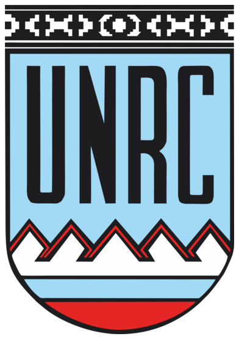

Universidad Nacional de Río Cuarto (UNRC)
Ecología Microbiana
Asignatura de la carrera de Microbiología
- Andrea Nesci
- Responsable de la asignatura
- Natalia Girardi
- Docente de trabajos prácticos de laboratorio
- Aluminé Fessia
- Docente de trabajos prácticos de laboratorio
- Joaquín Loyola
- Microbiólogo, becario doctoral, ayudante de la asignatura y responsable del desarrollo web
Con la participación de los estudiantes universitarios de Ecología Microbiana.